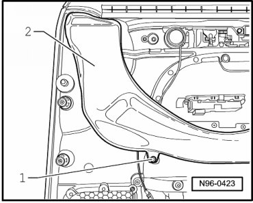
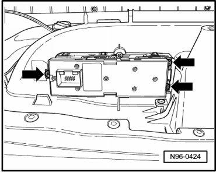

Driver Switch Module
Front Door Lamps and Switches
Driver Switch Module
The following components are integrated in driver side switch module:
• Left Front Window Regulator Switch (E40)
• Driver's Left Rear Window Regulator Switch (E53)
• Driver's Right Rear Window Regulator Switch (E55)
• Driver's Right Front Window Regulator Switch (E81)
• Child Safety Button (E318)
• Push Button Lamp (L76)
• Driver Interior Locking Button (E308)
CAUTION!
When removing and installing components in visible area (switches, covers, trim, etc.), cover by taping the areas at which a prying tool (plastic wedge, screwdriver) will be positioned using commercially available adhesive tape.
Removing
- Switch off ignition, switch off all electrical consumers and remove ignition key.
- Remove door trim on driver side.
- Remove mounting bolt - 1 - and remove air channel - 2 -.

- Remove mounting bolts - arrows - and remove switch module out of door trim.

Installing
Install in reverse order of removal.